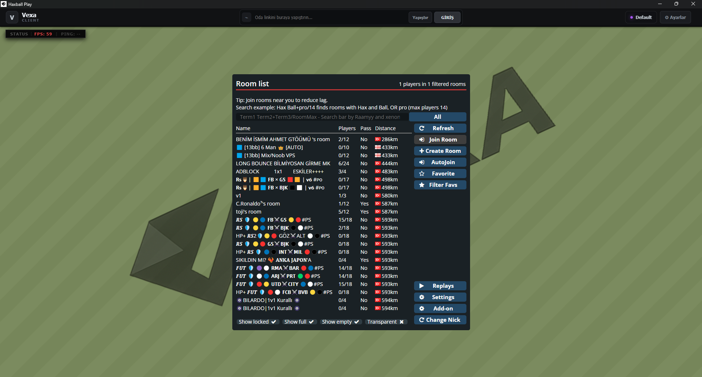
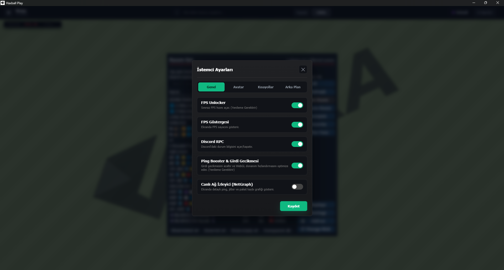
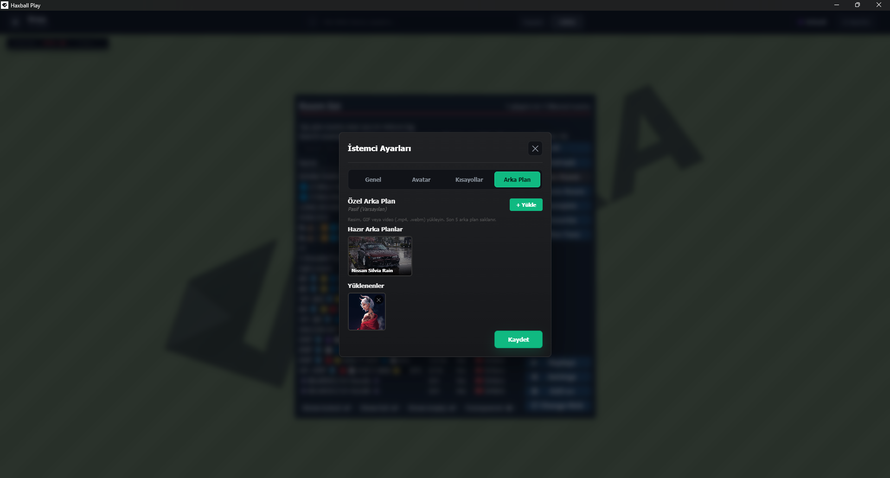

Hız için tasarlandı
FPS araçları, NetGraph ve düşük gecikme odaklı seçenekler bir arada.
HaxBall için 240+ FPS Unlocker, düşük ping/gecikme, Discord Rich Presence ve gelişmiş oda tarayıcısı sunan yeni nesil Windows istemcisi.
En güncel kararlı sürüm.
01 / NEDEN VEXA?
Vexa, yalnızca HaxBall'ı açan bir launcher değil. Performans, görünüm ve kontrolü tek, sakin bir deneyimde buluşturur.
FPS araçları, NetGraph ve düşük gecikme odaklı seçenekler bir arada.
Profilinden avatarına, arka plandan kısayollarına kadar kişiselleştir.
Tek kurulum. Vexa yeni sürümleri senin yerine indirip hazırlar.
02 / ARAYÜZ
Oda listenden ayarlarına kadar, akışı bölmeyen ama fark yaratan detaylar.



03 / DONANIMININ HAKKINI VER
FPS Unlocker, sayaç ve NetGraph ile ne olduğunu her an gör.
Oyun içindeki durumunu Rich Presence ile arkadaşlarınla paylaş.
Favoriler, filtreler ve autojoin ile istediğin odaya daha hızlı ulaş.
Oyun kimliğin ve sık kullandığın komutların her zaman yanında.
04 / HAXBALL CLIENT İNDİR
Windows 10/11 için 64-Bit ve 32-Bit ücretsiz HaxBall client kurulumu. Kur, aç, 240 FPS oyna.
05 / SSS
Vexa Client, HaxBall oyununu tarayıcı sınırlarından kurtaran Windows için özel masaüstü client ve launcher yazılımıdır. 240+ FPS desteği, NetGraph gecikme analizi, Discord RPC ve hızlı oda tarayıcısı ile en pürüzsüz oyun deneyimini sağlar.
Evet. Vexa Client tamamen ücretsizdir. 64-Bit ve 32-Bit Windows sistemlerinde hiçbir ücret ödemeden indirip kullanabilirsiniz.
Tarayıcıların varsayılan 60 FPS kilit sınırını ortadan kaldırır. Monitörünüzün 144Hz, 165Hz, 240Hz ve üzeri tazeleme hızına tam uyum sağlayarak top sürme, pas ve vuruş tepkisini milisaniyelere indirir.
Vexa Client'ın resmi ve güncel web sitesi vexaclient.com adresidir. Yeni sürümleri ve özellikleri resmi sitemizden takip edebilirsiniz.
Discord masaüstü uygulamanız açıkken Vexa Client üzerinden HaxBall oynadığınızda oyun içi skor, durum ve oda bilgileriniz otomatik olarak Discord profilinizde görünür.